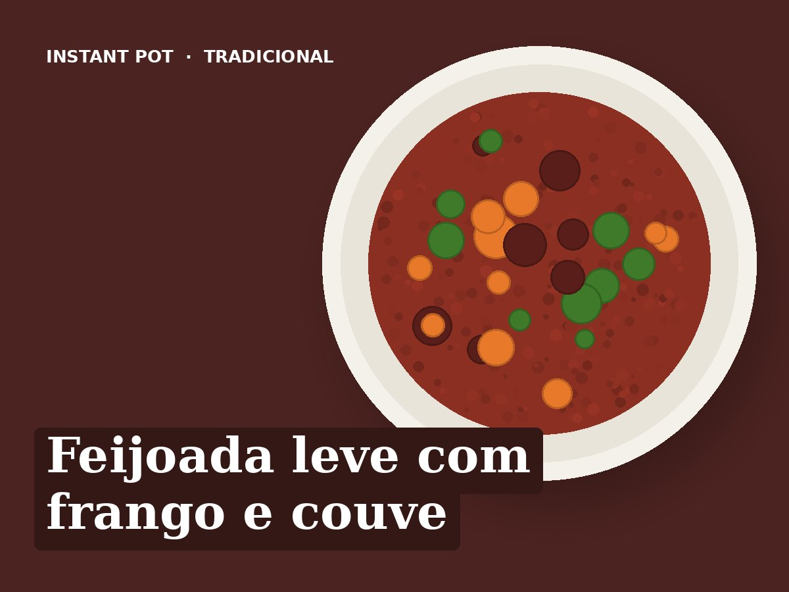

Feijoada leve com frango e couve
Ingredientes
- 2 latas de feijão encarnado (escorrido)
- 400 g de peito de frango em cubos
- 80 g de chouriço às rodelas
- 1 cebola
- 2 dentes de alho
- 2 cenouras às rodelas
- 200 g de couve lombarda às tiras
- 200 g de polpa de tomate
- 250 ml de água
- 1 folha de louro
- 1 colher de chá de colorau
- 1 colher de sopa de azeite
- Sal q.b.
Preparação
- Saltear: azeite, chouriço, cebola e alho, 3 minutos. Juntar o frango e o colorau, mais 2 minutos.
- Deitar a água e raspar o fundo. Juntar a cenoura, o feijão e o louro. Por cima a polpa de tomate, sem mexer.
- Pressão alta, 6 minutos. Libertação natural 5 minutos.
- Saltear: juntar a couve e cozinhar 5 minutos sem tampa.